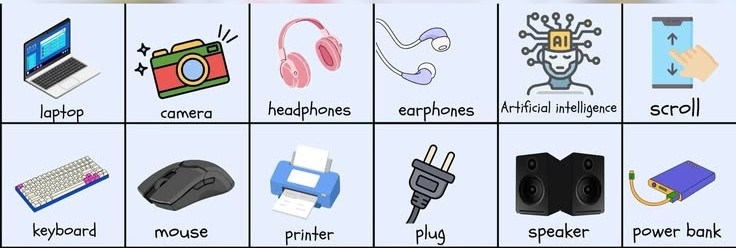

01. Apa itu English for Science and Technology (EST)?
English for Science and Technology (EST) adalah penggunaan bahasa Inggris yang difokuskan secara spesifik pada bidang sains dan teknologi. EST digunakan secara luas untuk memahami jurnal riset ilmiah, buku teks referensi akademik, serta komunikasi profesional di lingkungan akademik maupun industri global.

Gambar 1.1 Penerapan Komunikasi Kebahasaan Bidang Teknologi
Kamu telah mencapai akhir modul ini. Semangat Terus Belajarnya yaa✨
02. Kosa Kata Teknis (Technical Vocabulary)
Kosakata teknis adalah sekumpulan kata atau istilah khusus (jargon) yang memiliki makna spesifik dan baku di dalam bidang sains dan teknologi, yang jarang ditemukan dalam percakapan kasual sehari-hari.
Contoh istilah mendasar:
• Experiment → Percobaan ilmiah terstruktur
• Data → Sekumpulan fakta mentah hasil observasi
• Analysis → Proses investigasi mendalam terhadap data
• System → Kesatuan perangkat/prosedur yang saling terintegrasi

Gambar 2.1 Hubungan Klasifikasi Glosarium Istilah Sains
Kamu telah mencapai akhir modul ini. Semangat Terus Belajarnya yaa✨
03. Membaca Teks Ilmiah (Reading Scientific Texts)
Kemampuan membaca teks ilmiah sangat krusial dalam menyerap informasi akurat dari literatur riset jurnal internasional atau buku teks rujukan.
Karakteristik utama teks ilmiah:
• Menggunakan ragam tata bahasa formal dan objektif
• Padat akan istilah-istilah teknis domain spesifik
• Menghindari interpretasi kiasan (bersifat literal dan jelas)
Teknik membaca efektif yang sering diterapkan:
- Skimming: Membaca cepat untuk memahami ide atau ringkasan pokok pembahasan secara garis besar.
- Scanning: Membaca berfokus untuk menemukan potongan data atau kata kunci spesifik tertentu secara instan.

Gambar 3.1 Teknik Efektif Menelaah Literatur Ilmiah
Kamu telah mencapai akhir modul ini. Semangat Terus Belajarnya yaa✨
04. Menulis Teks Ilmiah (Writing Scientific Texts)
Kemampuan menulis dalam konteks EST digunakan secara berkala untuk menyusun laporan praktikum laboratorium, makalah ilmiah, proposal proyek, ataupun artikel penelitian riset.
Struktur baku penulisan ilmiah umumnya mengikuti format IMRAD:
• Introduction → Latar belakang masalah dan rumusan tujuan penelitian.
• Method → Penjelasan langkah-langkah metodologi serta alat/bahan praktikum.
• Result → Paparan temuan visual data riil yang diperoleh dari pengujian.
• Conclusion → Penarikan konklusi ringkas berdasarkan analisis komparatif data.

Gambar 4.1 Skema Standardisasi Anatomi Karya Tulis Ilmiah
Kamu telah mencapai akhir modul ini. Semangat Terus Belajarnya yaa✨
05. Grammar dalam Konteks Sains
Tata bahasa (*Grammar*) yang digunakan di dalam EST sangat terstruktur dan formal demi meminimalisasi subjektivitas.
Dua pola struktur kalimat yang paling sering mendominasi literatur sains:
• Simple Present Tense → Digunakan untuk menyatakan fakta ilmiah universal, kebenaran mutlak, atau hukum sains yang berlaku tetap (Ex: Water boils at 100°C).
• Passive Voice (Kalimat Pasif) → Digunakan untuk menggeser fokus utama pembaca pada proses eksperimen atau objek penelitian, bukan pada pelakunya (Ex: The experiment was conducted under controlled temperatures).

Gambar 5.1 Contoh Komparasi Kalimat Aktif vs Pasif Ilmiah
Kamu telah mencapai akhir modul ini. Semangat Terus Belajarnya yaa✨
06. Presentasi Ilmiah (Scientific Presentation)
Presentasi ilmiah adalah forum komunikasi lisan untuk menyampaikan hasil penelitian, rekayasa teknologi, atau ide gagasan baru di hadapan audiens akademik.
Tiga hal esensial demi kesuksesan presentasi:
• Gunakan bahasa Inggris transisi yang jelas, lugas, dan sederhana.
• Dukung penjelasan data numerik menggunakan bantuan grafik, bagan, atau gambar infografis.
• Aplikasikan pelafalan istilah teknis (*pronunciation*) secara tepat.
Contoh kalimat pembuka (*Signposting*) formal:
• "Good morning everyone, today I would like to deliver our findings regarding..."

Gambar 6.1 Etika dan Retorika Penyajian Materi Seminar
Kamu telah mencapai akhir modul ini. Semangat Terus Belajarnya yaa✨